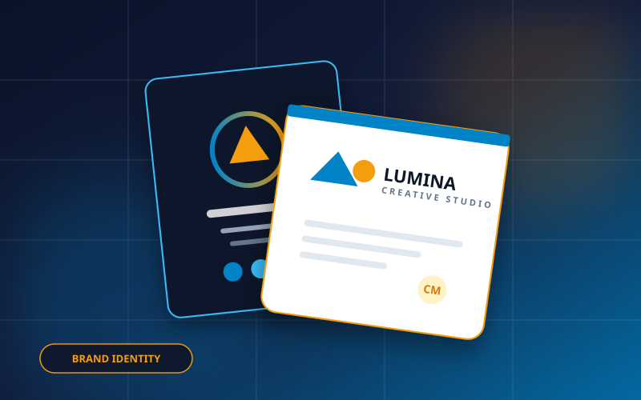
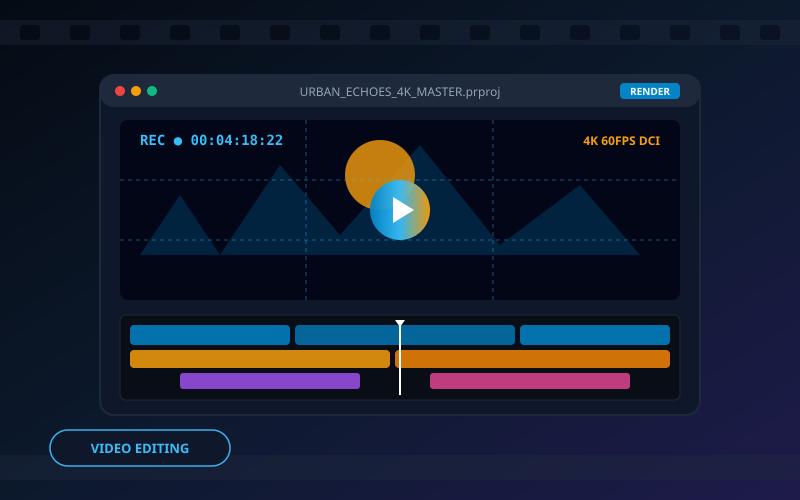
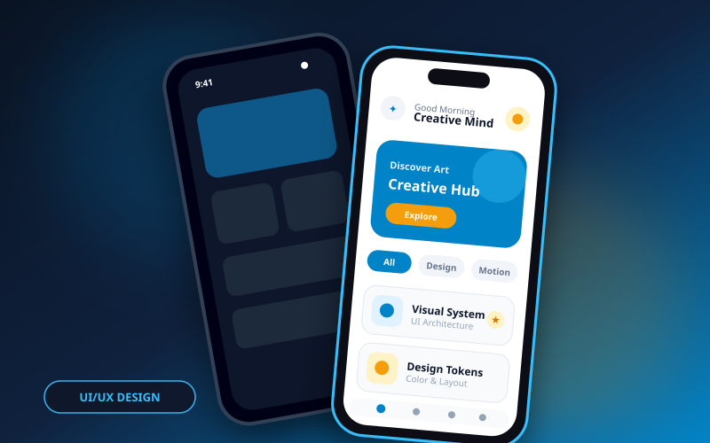
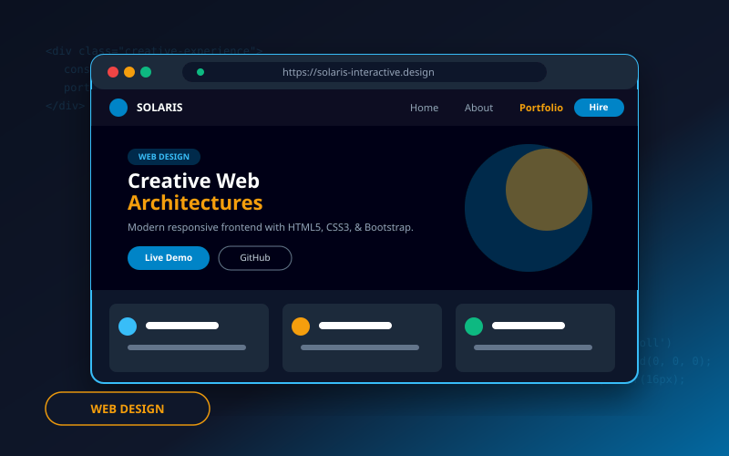
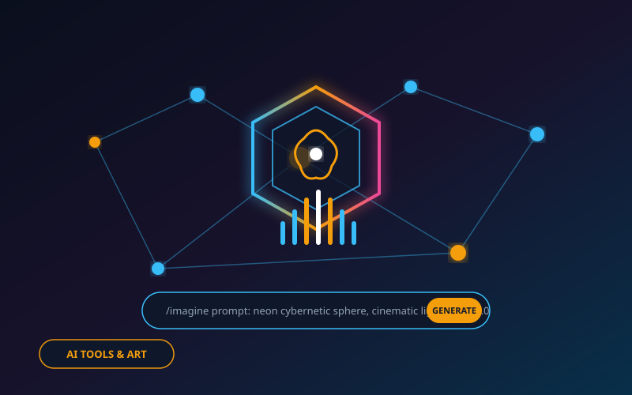

Lumina Brand Identity
ระบบอัตลักษณ์แบรนด์และ Visual Guidelines สำหรับสตูดิโอยุคใหม่ โดดเด่นด้วยโทนสีฟ้า-เหลืองอันทรงพลัง

Urban Echoes Short Film
ภาพยนตร์สั้นเชิงสารคดีที่ถ่ายทอดจังหวะชีวิตของเมืองใหญ่ผ่านภาพ 4K DCI, การเกรดสี และการออกแบบเสียง Foley

CyberPulse 3D Motion Reel
ภาพเคลื่อนไหว 3 มิติประกอบดนตรีแนว Cyberpunk ผสานอนุภาคแสงและเทคนิคเรขาคณิตสามมิติใน Cinema 4D

Artisan Coffee App UI/UX
การออกแบบส่วนต่อประสานและประสบการณ์ผู้ใช้งานสำหรับแอปกาแฟพรีเมียม ตั้งแต่วิจัยผู้ใช้จนถึงตัวอย่าง Interactive

Solaris Interactive Web
เว็บไซต์แลนดิ้งเพจสไตล์ Glassmorphism พัฒนาด้วย HTML5, CSS3, JavaScript และ Bootstrap 5 ตอบสนองทุกหน้าจอ

Synthesia AI Visual Art
การสำรวจจินตนาการโลกอนาคตด้วยเทคโนโลยี Generative AI, ControlNet และ Prompt Crafting สไตล์ไซเบอร์สเปซ